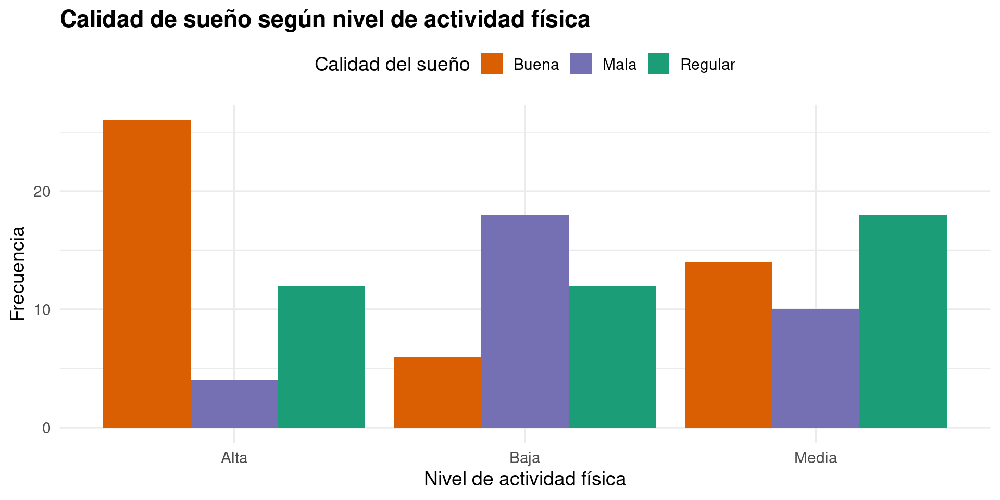
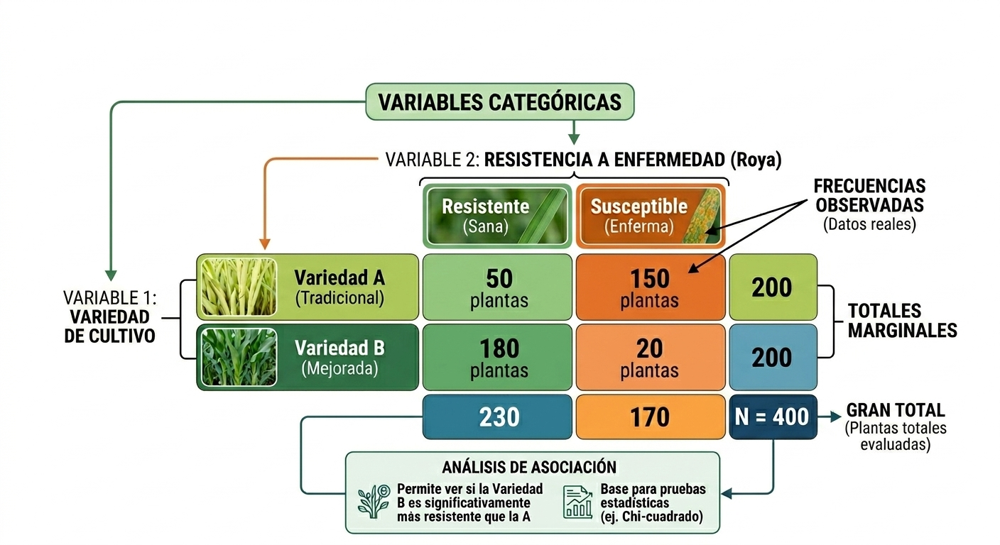
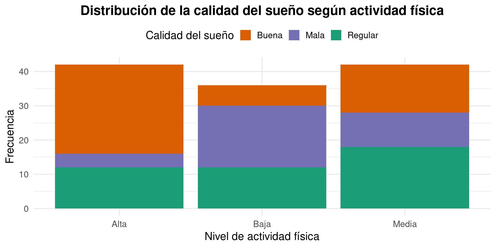
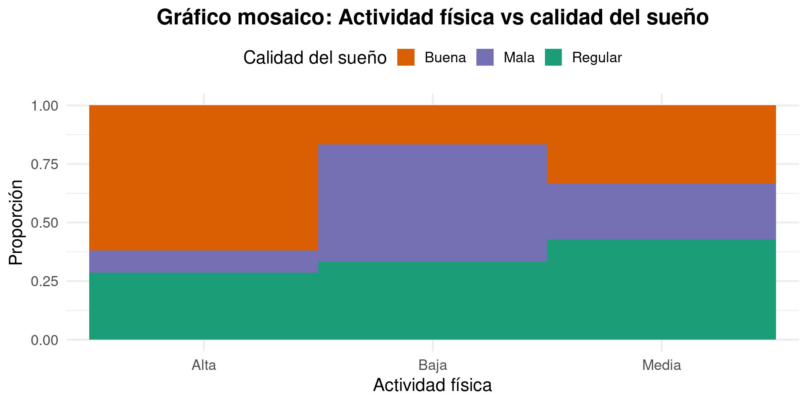
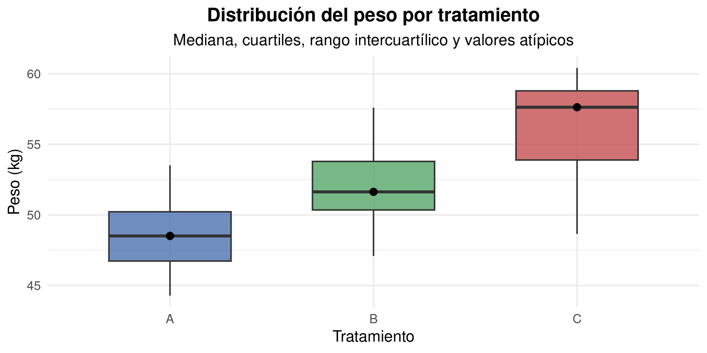
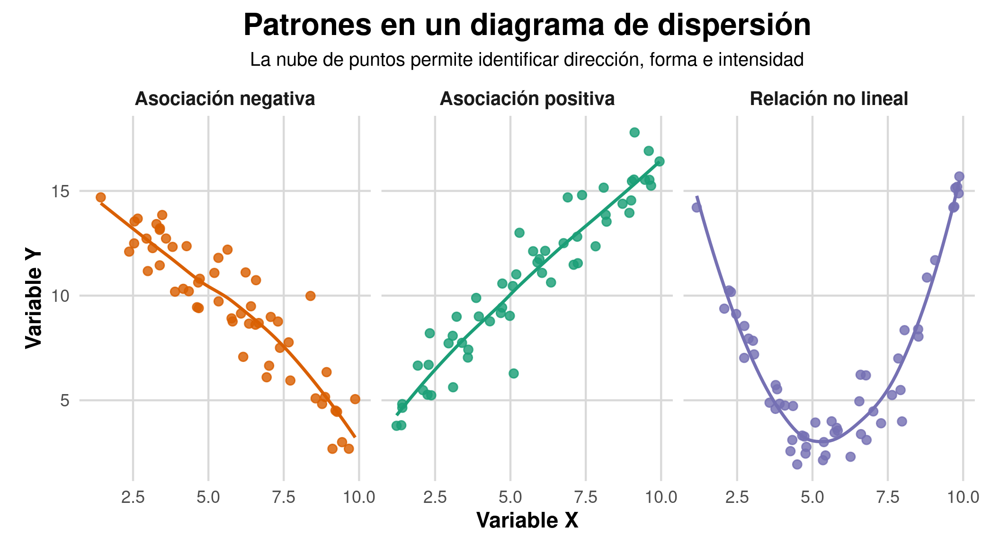
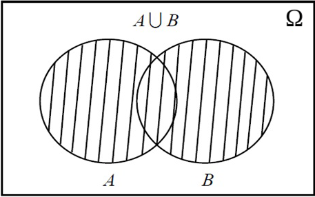
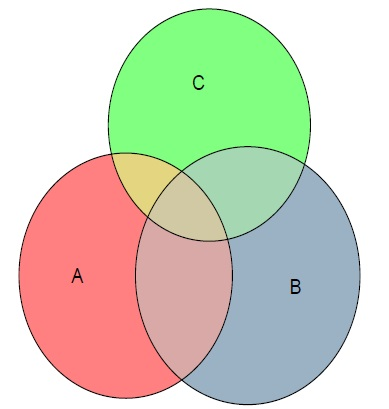
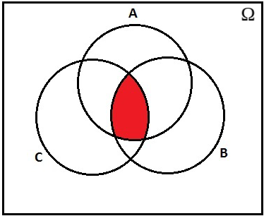

Bioestadística Fundamental
Departamento de Estadı́stica, Sede Bogotá
Clase 5
Estadística Descriptiva Bivariada
y Probabilidad
Tablas, gráficos, medidas de asociación y experimentos aleatorios
Bioestadística Fundamental — Departamento de Estadística, UNAL Bogotá
Contenido
Parte I: Estadística bivariada
- Tablas de contingencia.
- Proporciones por fila y columna.
- Chi-cuadrado de independencia.
- Barras agrupadas, apiladas y mosaicos.
- Boxplot y diagrama de dispersión.
Parte II: Medidas de asociación
- Covarianza.
- Correlación de Pearson.
- Correlación de Spearman.
- Limitaciones e interpretación.
Parte III: Probabilidad
- Experimento aleatorio.
- Espacio muestral.
- Eventos: definición y ejemplos.
- Unión, intersección y complemento.
- Propiedades de los eventos.
¿Qué estudia la estadística descriptiva bivariada?
Es el conjunto de técnicas que permiten organizar, resumir y visualizar de manera conjunta dos variables observadas en los mismos individuos, unidades experimentales o elementos de estudio.
Su propósito es describir si existe relación, cómo es esa relación y qué tan fuerte parece ser.
¿Por qué estudiar dos variables al mismo tiempo?
- Porque una variable puede ayudar a explicar el comportamiento de otra.
- Porque permite comparar subgrupos dentro de una población.
- Porque ayuda a detectar asociaciones útiles en investigación y toma de decisiones.
- Porque resume mejor la información que analizar variables por separado.
Tipos de análisis bivariado según las variables
- Cualitativa + cualitativa
- Se usan tablas de contingencia y gráficos de barras o mosaicos.
- Ejemplo: sexo y hábito de fumar.
- Cuantitativa + cualitativa
- Se usan resúmenes por grupo y boxplots.
- Ejemplo: rendimiento según fertilizante.
- Cuantitativa + cuantitativa: dispersión y correlación.
Tabla de contingencia
Definición
Una tabla de contingencia es una tabla de doble entrada que resume la distribución conjunta de dos variables cualitativas mediante frecuencias absolutas o relativas.
- Filas: categorías de una variable.
- Columnas: categorías de la otra variable.
- Celdas internas: frecuencias conjuntas.
- Totales por fila: marginales fila.
- Totales por columna: marginales columna.
- Total general: tamaño de la muestra.
Elementos de una tabla de contingencia

Ejemplo: actividad física y calidad del sueño
En una muestra de 120 estudiantes se registran dos variables:
- Actividad física semanal: Baja, Media, Alta.
- Calidad del sueño: Mala, Regular, Buena.
Queremos describir si ambas variables parecen estar asociadas.
| Actividad física | Mala | Regular | Buena | Total |
|---|---|---|---|---|
| Baja | 18 | 12 | 6 | 36 |
| Media | 10 | 18 | 14 | 42 |
| Alta | 4 | 12 | 26 | 42 |
| Total | 32 | 42 | 46 | 120 |
Proporciones
Proporciones por fila
| Calidad del sueño | Mala | Regular | Buena |
|---|---|---|---|
| Baja | 56.3% | 28.6% | 13.0% |
| Media | 31.3% | 42.9% | 30.4% |
| Alta | 12.5% | 28.6% | 56.5% |
| Total | 100% | 100% | 100% |
Proporciones por columna
| Calidad del sueño | Mala | Regular | Buena | Total |
|---|---|---|---|---|
| Baja | 50.0% | 33.3% | 16.7% | 100% |
| Media | 23.8% | 42.9% | 33.3% | 100% |
| Alta | 9.5% | 28.6% | 61.9% | 100% |
| Total | 100% | 100% | 100% | 100% |
Algunas conclusiones:
- Entre quienes tienen actividad física baja, la mitad reporta sueño malo.
- Entre quienes tienen actividad física alta, 61.9% reporta sueño bueno.
- Esto sugiere una asociación positiva entre mayor actividad física y mejor calidad del sueño.
¿Por qué no basta con los totales?
- Los totales marginales muestran cuánto hay de cada categoría por separado.
- Pero la asociación entre variables aparece en la comparación de las frecuencias conjuntas.
- Dos tablas pueden tener los mismos marginales y, sin embargo, relaciones internas muy diferentes.
-
Utilizamos algunos de los siguientes test estadísticos para concluir sobre el fenómeno en estudio:
- Independencia: Chi-cuadrado o test exacto de Fisher (muestras pequeñas).
- Homogeneidad: Chi-cuadrado(dos poblaciones) o test exacto de Fisher.
- Simetría (tablas cuadradas n×n): Test de McNemar (para 2×2 pareadas), Test de simetría de Bowker (extensión de McNemar para n×n) y Test de Stuart-Maxwell (homogeneidad marginal).
Chi-cuadrado de independencia
Evalúa si dos variables categóricas son independientes o están asociadas.
Hipótesis
\(H_0\): Las variables son independientes.
\(H_1\): Las variables no son independientes.
Estadístico de prueba
\[ \chi^2 = \sum_{i=1}^{n} \sum_{j=1}^{m} \frac{(O_{ij} - E_{ij})^2}{E_{ij}} \]
Frecuencia esperada
\[ E_{ij} = \frac{(T_{i\cdot})(T_{\cdot j})}{T} \]
Donde: \(T_{i\cdot}\) es el total fila, \(T_{\cdot j}\) es el total columna y \(T\) es el total general.
Grados de libertad
\[ gl = (n - 1)(m - 1) \]
Región crítica, Con \(\alpha\) el nivel de significancia:
\[ \text{Región crítica: } \chi^2_{\text{obs}} > \chi^2_{\alpha, gl} \] donde \(\chi^2_{\alpha,, gl}\) es el valor crítico de la distribución Chi-cuadrado con \(gl\) grados de libertad.
Regla de decisión
Si \(\chi^2_{\text{obs}} > \chi^2_{\alpha,, gl}\) → Rechazar \(H_0\)
Si \(\chi^2_{\text{obs}} \leq \chi^2_{\alpha,, gl}\) → No rechazar \(H_0\)
Ejemplo
Evaluar si existe asociación entre el tipo de fertilización y la presencia de enfermedad en cultivos fríos (papa) en Colombia. Se observan los siguientes datos:
| Fertilización | Enfermedad: Sí | Enfermedad: No | Total |
|---|---|---|---|
| A | 30 | 20 | 50 |
| B | 15 | 35 | 50 |
| Total | 45 | 55 | 100 |
Hipótesis
\(H_0\): fertilización y enfermedad son independientes
\(H_1\): Existe asociación entre las variables
Frecuencias esperadas
\[ E_{11} = \frac{50 \times 45}{100} = 22.5 \quad E_{12} = \frac{50 \times 55}{100} = 27.5 \]
\[ E_{21} = \frac{50 \times 45}{100} = 22.5 \quad E_{22} = \frac{50 \times 55}{100} = 27.5 \]
Estadístico de prueba
\[ \chi^2 = \frac{(30-22.5)^2}{22.5} + \frac{(20-27.5)^2}{27.5} + \frac{(15-22.5)^2}{22.5} + \frac{(35-27.5)^2}{27.5} \]
\[ \chi^2_{obs} \approx 9.09 \]
Región crítica
\[ gl = (2-1)(2-1) = 1 \] Para \(\alpha = 0.05\) tenemos que: Tabla \[ \chi^2_{0.05,1} = 3.84 \]
Regla de decisión
Si \(\chi^2_{\text{obs}} > \chi^2_{\alpha, gl}\) → Rechazar \(H_0\)
Si \(\chi^2_{\text{obs}} \leq \chi^2_{\alpha, gl}\) → No rechazar \(H_0\)
Gráficos Bivariados
Barras, mosaicos, boxplots y diagramas de dispersión
Barras agrupadas
- Comparan categorías lado a lado.
- Son útiles para contrastar frecuencias o porcentajes.
- Facilitan ver diferencias entre grupos.
Por ejemplo, grafiquemos para cada nivel de actividad física las tres barras de sueño malo, regular y bueno.
Barras apiladas
- Muestran la composición interna de cada grupo.
- Son útiles cuando interesa comparar proporciones.
- Conviene usar barras de igual altura cuando se comparan porcentajes.
Permiten ver rápidamente si cambia la distribución de una variable de acuerdo con la otra.

Gráfico mosaico
El gráfico mosaico representa las categorías de dos variables cualitativas usando rectángulos cuya área es proporcional a la frecuencia conjunta.
Es especialmente útil para ver simultáneamente tamaño de grupos y composición interna.

¿Cuándo usar cada gráfico?
| Objetivo | Recurso recomendado |
|---|---|
| Comparar categorías lado a lado | Barras agrupadas |
| Ver composición interna | Barras apiladas |
| Ver frecuencia conjunta y marginal al mismo tiempo | Mosaico |
| Resumir tablas pequeñas | Tabla de contingencia |
Ejercicio: elección de gráfico
Para cada situación, indique el gráfico bivariado más apropiado y justifique brevemente:
- Comparar la distribución del peso al nacer (kg) entre recién nacidos de madres fumadoras y no fumadoras.
- Describir la relación entre dosis de fertilizante (kg/ha) y rendimiento de maíz (ton/ha) en 50 parcelas.
- Mostrar la composición de causas de mortalidad según grupo de edad (joven, adulto, mayor).
- Comparar el porcentaje de plantas enfermas entre tres tipos de suelo (arcilloso, arenoso, franco).
Respuestas:
- Boxplot por grupo: variable cuantitativa vs cualitativa.
- Diagrama de dispersión: dos variables cuantitativas.
- Barras apiladas o mosaico: dos cualitativas; interesa la composición interna.
- Barras agrupadas: dos cualitativas; interesa comparar frecuencias entre grupos.
Una variable cuantitativa y otra cualitativa
- Interesa comparar una medición numérica entre grupos.
- Se calculan medias, medianas y dispersión por categoría.
- Ejemplo: presión arterial según dieta.
- También pueden compararse mínimos, máximos y rango intercuartílico.
| Tratamiento | \(n\) | \(\bar{x}\) (kg) | \(Me\) | \(\sigma\) |
|---|---|---|---|---|
| A | 12 | 48.2 | 48.0 | 3.1 |
| B | 12 | 52.6 | 52.1 | 2.8 |
| C | 12 | 55.4 | 55.0 | 4.0 |
Gráficos para cuantitativa vs cualitativa
- Boxplot: compara medianas, cuartiles y atípicos.
- Diagrama de puntos: útil en muestras pequeñas.
- Violín o densidad por grupo: útil si se quiere ver la forma de la distribución.
¿Qué muestra un boxplot?
- Mediana.
- Cuartil 1 y cuartil 3.
- Rango intercuartílico.
- Bigotes.
- Valores extremos o atípicos.
- Posibles diferencias en simetría entre grupos.

Ejercicio: interpretación de boxplot
Un investigador mide el contenido de proteína (g/100g) en dos variedades de fríjol. El boxplot muestra:
| Estadístico | Variedad A | Variedad B |
|---|---|---|
| Mínimo | 18 | 20 |
| \(Q_1\) | 21 | 23 |
| Mediana | 24 | 25 |
| \(Q_3\) | 27 | 26 |
| Máximo | 38 | 30 |
Preguntas:
- ¿Cuál variedad tiene mayor IQR? Calcúlelo.
- ¿Qué indica el máximo de 38 en la Variedad A? ¿Podría ser un dato atípico?
- ¿Cuál variedad es más homogénea? Justifique.
- ¿Qué variedad elegiría si busca mayor contenido proteico mediano?
Respuestas: IQR A = 6, IQR B = 3. Variedad A: 38 podría ser atípico (\(LS = 27 + 1.5 \times 6 = 36\)). Variedad B es más homogénea (IQR menor). Variedad B tiene mediana levemente mayor (25 vs 24).
Dos variables cuantitativas
Cuando ambas variables son cuantitativas, el interés principal suele ser describir si existe una relación entre sus valores, si dicha relación es positiva o negativa, y si parece lineal o no lineal.
Diagrama de dispersión
Representa cada individuo mediante un punto cuyas coordenadas corresponden a los valores observados en las dos variables cuantitativas.
- Eje horizontal: valores de la variable X.
- Eje vertical: valores de la variable Y.
- Cada punto representa una observación.
- La nube de puntos sugiere dirección, forma e intensidad.
Patrones
- Asociación positiva.
- Asociación negativa.
- Ausencia aparente de asociación.
Asociación
- Asociación positiva.
- Asociación negativa.
- Ausencia aparente de asociación.
Relación
- Relación lineal.
- Relación curva o no lineal.
- Presencia de subgrupos o atípicos.
Patrones que puede mostrar la nube de puntos
Dirección
-
Positiva
Al aumentar \(X\), \(Y\) tiende a aumentar. -
Negativa
Al aumentar \(X\), \(Y\) tiende a disminuir.
Forma
- Si los puntos siguen aproximadamente una recta, la relación es lineal.
- Si los puntos forman una curva, la relación es no lineal.

- Un punto aislado puede cambiar fuertemente la correlación.
- Siempre conviene revisar el gráfico antes de resumir numéricamente.
- Un valor extremo puede ser un error o una observación real importante.
Medidas de asociación
Covarianza, correlación de Pearson y de Spearman
Medidas numéricas de asociación
Las medidas de asociación complementan, pero no sustituyen, el gráfico de dispersión, estas son:
- Covarianza: indica si dos variables tienden a moverse en el mismo sentido o en sentido opuesto.
- Correlación resume dirección e intensidad de la relación lineal.
Covarianza
Definición
La covarianza mide la variación conjunta de dos variables cuantitativas con respecto a sus medias y su signo indica la dirección de la relación lineal. La forma está dada por:
\[ s_{xy}=\frac{\sum_{i=1}^{n}(x_i-\bar{x})(y_i-\bar{y})}{n-1} \]
- Covarianza positiva: ambas variables tienden a aumentar o disminuir juntas.
- Covarianza negativa: cuando una aumenta, la otra tiende a disminuir.
- Covarianza cercana a cero: poca asociación lineal aparente.
- Su magnitud depende de las unidades, por eso no es fácil compararla entre estudios.
Correlación de Pearson
Definición
La correlación de Pearson estandariza la covarianza y produce una medida sin unidades que resume la dirección e intensidad de la asociación lineal entre dos variables cuantitativas. Su fórmula está dada por:
\[ r=\frac{s_{xy}}{s_xs_y} \]
También puede verse como la covarianza dividida por el producto de las desviaciones estándar de X y Y.
Rango de la correlación de Pearson
- \(-1 \leq r \leq 1\)
- \(r=1\): asociación lineal positiva perfecta.
- \(r=-1\): asociación lineal negativa perfecta.
- \(r\approx 0\): ausencia de asociación lineal fuerte.
| \(|r|\) | Interpretación aproximada |
|---|---|
| 0.00 – 0.19 | Muy débil |
| 0.20 – 0.39 | Débil |
| 0.40 – 0.59 | Moderada |
| 0.60 – 0.79 | Fuerte |
| 0.80 – 1.00 | Muy fuerte |
Estas categorías son orientativas; siempre deben leerse junto con el contexto y el gráfico.
Correlación de Spearman
- Se basa en los rangos de los datos, no en los valores originales.
- Es útil cuando la relación es monótona pero no estrictamente lineal.
- También es útil con datos ordinales o cuando hay menor confianza en la normalidad.
| Característica | Pearson | Spearman |
|---|---|---|
| Tipo de relación | Lineal | Monótona |
| Usa valores originales | ✔ Sí | ✖ No (usa rangos) |
| Datos ordinales | ✖ No es el más apropiado | ✔ Sí |
| Sensibilidad a atípicos | Mayor | Menor |
Ejemplo
Supongamos cinco plantas donde se mide:
- X = horas de luz: 4, 5, 6, 7, 8
- Y = altura (cm): 10, 12, 13, 15, 18
Las medias son:
\[ \bar{x}=6 \qquad \bar{y}=13.6 \]
Las desviaciones de cada dato se obtienen restando su media correspondiente.
| \(x_i\) | \(y_i\) | \((x_i - \bar{x})\) | \((y_i - \bar{y})\) | \(((x_i-\bar{x})(y_i-\bar{y}))\) |
|---|---|---|---|---|
| 4 | 10 | -2 | -3.6 | 7.2 |
| 5 | 12 | -1 | -1.6 | 1.6 |
| 6 | 13 | 0 | -0.6 | 0.0 |
| 7 | 15 | 1 | 1.4 | 1.4 |
| 8 | 18 | 2 | 4.4 | 8.8 |
| Suma | 19.0 | |||
- Al realizar los cálculos tenemos que \(r\approx 0.985\), se obtiene una correlación positiva alta.
- Luego, existe una asociación lineal positiva fuerte entre horas de luz y altura.
Ejercicio: covarianza y correlación
En cinco fincas se registra la precipitación mensual (mm) y el rendimiento de maíz (ton/ha):
| Finca | Precipitación \(x_i\) | Rendimiento \(y_i\) |
|---|---|---|
| 1 | 80 | 3.2 |
| 2 | 100 | 3.8 |
| 3 | 120 | 4.5 |
| 4 | 140 | 4.9 |
| 5 | 160 | 5.6 |
| \(\bar{x} = 120\) | \(\bar{y} = 4.4\) | |
Preguntas:
- Complete la columna \((x_i - \bar{x})(y_i - \bar{y})\) y calcule \(s_{xy}\).
- Si \(s_x = 31{,}62\) y \(s_y = 0{,}86\), calcule \(r\).
- Interprete la dirección e intensidad de la asociación.
- ¿Concluye que llueve más causa mayor rendimiento? Argumente.
Respuesta: \(s_{xy} = 27{,}2\); \(r = 27{,}2 / (31{,}62 \times 0{,}86) \approx 1{,}00\). Asociación positiva muy fuerte. La correlación no implica causalidad; pueden existir otras variables (temperatura, tipo de suelo) que influyan simultáneamente.
Correlación no implica causalidad
Que dos variables estén correlacionadas no demuestra que una cause a la otra.
Puede existir una tercera variable que influya sobre ambas o una coincidencia estructural del conjunto de datos.
Correlación espuria y variables de confusión
- Una correlación espuria aparece sin una relación sustantiva real.
- Una variable de confusión afecta simultáneamente a X y Y.
- Por eso el análisis descriptivo debe acompañarse de conocimiento del contexto.
Subgrupos ocultos
- A veces la nube global oculta grupos con comportamientos distintos.
- Conviene identificar si existen tratamientos, sedes, sexos o estratos que deban analizarse por separado.
- La descripción global puede ser engañosa si mezcla poblaciones diferentes.
Esquema de trabajo recomendado
| Tipo de variables | Recurso principal | Medida complementaria |
|---|---|---|
| Cualitativa + cualitativa | Tabla de contingencia | Porcentajes |
| Cuantitativa + cualitativa | Tabla resumen / Boxplot | Media, mediana, DE |
| Cuantitativa + cuantitativa | Dispersión | Covarianza, correlación |
Buenas prácticas en análisis bivariado
- Empezar por el tipo de variables.
- Usar primero tablas o gráficos, luego medidas numéricas.
- Interpretar porcentajes con claridad: por fila, por columna o totales.
- No confundir asociación con causalidad.
Ejercicio 1
Se mide la presión arterial en 80 pacientes y se observa que:
- 40 mujeres y 40 hombres.
- Entre las mujeres, 12 tienen presión alta.
- Entre los hombres, 20 tienen presión alta.
Construya la tabla 2x2 de frecuencias absolutas.
| Sexo | Alta | Normal | Total |
|---|---|---|---|
| Mujeres | 12 | 28 | 40 |
| Hombres | 20 | 20 | 40 |
| Total | 32 | 48 | 80 |
Interprete los porcentajes por fila.
- ¿Qué porcentaje de mujeres tiene presión alta?
- ¿Qué porcentaje de hombres tiene presión alta?
- Mujeres con presión alta: (12/40 = 30%).
- Hombres con presión alta: (20/40 = 50%).
- La presión alta es relativamente más frecuente en hombres dentro de esta muestra.
Ejercicio 2
Si la correlación entre horas de estudio y nota final es (r=0.72), describa:
- la dirección,
- la intensidad,
- y una precaución sobre causalidad.
- Dirección: positiva.
- Intensidad: fuerte.
- La correlación no demuestra que estudiar más sea la única causa de una mejor nota.
Verdadero o falso
- Si (r=0), entonces no existe ninguna relación entre X y Y ?
- La covarianza depende de las unidades de medición?
- Una tabla de contingencia se usa para dos variables cualitativas?
- Un outlier puede modificar la correlación?
- Falso: (r=0) solo indica ausencia de relación lineal fuerte.
- Verdadero: la covarianza conserva unidades.
- Verdadero: resume frecuencias conjuntas.
- Verdadero: por eso primero se inspecciona el gráfico.
Ideas clave
La descripción bivariada es el punto de partida para técnicas inferenciales como prueba chi-cuadrado, comparación de medias, regresión lineal y análisis de asociación.
Antes de inferir, primero hay que describir bien los datos.
- El recurso descriptivo depende del tipo de variables.
- Las tablas y gráficos muestran patrones; las medidas numéricas los resumen.
- La correlación describe asociación lineal, no causalidad.
- Siempre debe revisarse el contexto y la visualización antes de concluir.
Experimento aleatorio y probabilidad
Espacio muestral, eventos y operaciones
Motivación
¿Cara o Sello?

No podemos saber de antemano cuál será el resultado, pero sí podemos listar todos los resultados posibles y asignarles probabilidades.
Experimento aleatorio, espacio muestral y eventos
- En la vida cotidiana nos enfrentamos constantemente a situaciones cuyo resultado no podemos predecir con certeza.
- ¿Cuál será el resultado de lanzar una moneda?
- ¿Qué tipo de sangre tendrá el próximo donante?
- ¿Cuántos días vivirá una nueva variedad de planta bajo ciertas condiciones?
- La probabilidad es la rama de las matemáticas que estudia y cuantifica la incertidumbre de estos fenómenos.
-
Para construir ese lenguaje formal, necesitamos definir tres conceptos fundamentales:
- Experimento aleatorio
- Espacio muestral
- Eventos
Experimento aleatorio
Definición
Un experimento aleatorio es aquel que, aun siendo realizado bajo condiciones fijas y controladas, puede producir diferentes resultados y no es posible predecir con certeza cuál ocurrirá.
Características:
- Se puede repetir bajo las mismas condiciones.
- El resultado de cada repetición es incierto.
- El conjunto de todos los resultados posibles es conocido de antemano.
Ejemplos de experimentos aleatorios
- Lanzar una moneda y observar el resultado.
- Lanzar un dado y observar la cara superior.
- Seleccionar un donador de sangre y verificar su tipo sanguíneo.
- Sortear un estudiante y preguntarle sobre su hábito de fumar.
- Seleccionar una lámpara de un lote y medir su tiempo de vida.
- Elegir una planta al azar en un cultivo de arroz y verificar si está infestada con plaga o no.
- Medir la precipitación diaria en una finca durante la temporada para prever los milímetros de lluvia.
- Plantar una semilla y registrar si germina o no.
- Seleccionar una planta de maíz al azar en un cultivo tropical y medir la cantidad de mazorcas producidas.
Espacio muestral
Definición
El espacio muestral es el conjunto de todos los resultados posibles de un experimento aleatorio. Se denota por \(\Omega\). Donde cada elemento \(\omega \in \Omega\) se denomina punto muestral o resultado elemental.
Ejemplos de espacios muestrales
- Lanzar un dado y observar la cara superior: \[\Omega = \{1, 2, 3, 4, 5, 6\}\]
- Tipo sanguíneo de un donador: \[\Omega = \{A, B, O, AB\}\]
- Hábito de fumar de un estudiante: \[\Omega = \{Sí, No\}\]
- Tiempo de vida de una lámpara (en horas): \[\Omega = \{t \in \mathbb{R} : t \geq 0\}\]
- Los espacios muestrales pueden ser discretos (finitos o contablemente infinitos) o continuos (no contables).
Ejercicio
Se lanza una moneda dos veces. Si \(C\) indica cara y \(S\) indica sello, ¿cuál es el espacio muestral?
- \[\Omega = \{\omega_1, \omega_2, \omega_3, \omega_4\}\]
-
donde:
- \(\omega_1 = (C, C)\)
- \(\omega_2 = (C, S)\)
- \(\omega_3 = (S, C)\)
- \(\omega_4 = (S, S)\)
Eventos
Definición
Un evento (o suceso) es cualquier subconjunto del espacio muestral \(\Omega\).
- Notación: los eventos se denotan con letras mayúsculas \(A, B, C, \ldots\)
- Evento imposible: \(\emptyset\) (conjunto vacío, nunca ocurre).
- Evento seguro: \(\Omega\) (espacio muestral completo, siempre ocurre).
Ejemplos de eventos
Experimento: lanzar un dado. \(\Omega = \{1,2,3,4,5,6\}\)
- \(A\): que salga número par \[A = \{2, 4, 6\} \subset \Omega\]
- \(B\): que salga un número mayor que 3 \[B = \{4, 5, 6\} \subset \Omega\]
- \(C\): que salga exactamente 1 \[C = \{1\} \subset \Omega\]
Evento imposible y evento seguro
- \(D\): que salga un número mayor que 10 \[D = \emptyset \quad \text{(evento imposible)}\]
- \(E\): que salga algún número entre 1 y 6 \[E = \Omega \quad \text{(evento seguro)}\]
Ejercicio: artículos de una fábrica
Enunciado
- De la línea de producción de una fábrica se retiran tres artículos, y cada uno es clasificado como Bueno (B) o Defectuoso (D).
- ¿Cuál es el espacio muestral? Describa el evento \(A\): “obtener exactamente dos artículos defectuosos”.
Solución
- \[\Omega = \{BBB,\; BBD,\; BDB,\; DBB,\; BDD,\; DBD,\; DDB,\; DDD\}\]
- El evento \(A\) (exactamente dos defectuosos): \[A = \{BDD,\; DBD,\; DDB\}\]
Operaciones con eventos
¿Por qué necesitamos operar con eventos?
Al igual que con conjuntos, podemos combinar eventos para describir situaciones más complejas. Las operaciones fundamentales son: unión, intersección, complemento y diferencia.
Unión de eventos: \(A \cup B\)
Definición
- La unión \(A \cup B\) representa la ocurrencia de al menos uno de los eventos \(A\) o \(B\).
- \[A \cup B = \{\omega \in \Omega : \omega \in A \text{ o } \omega \in B\}\]
- Decimos que ocurre \(A \cup B\) si ocurre \(A\), o ocurre \(B\), o ambos ocurren simultáneamente.
Diagrama de Venn: \(A \cup B\)

Unión de tres eventos: \(A \cup B \cup C\)
Diagrama de Venn: \(A \cup B \cup C\)

Intersección de eventos: \(A \cap B\)
Definición
- La intersección \(A \cap B\) representa la ocurrencia simultánea de los eventos \(A\) y \(B\).
- \[A \cap B = \{\omega \in \Omega : \omega \in A \text{ y } \omega \in B\}\]
- Decimos que ocurre \(A \cap B\) solo si ocurren ambos \(A\) y \(B\) al mismo tiempo.
Diagrama de Venn: \(A \cap B\)

Intersección de tres eventos: \(A \cap B \cap C\)
Diagrama de Venn: \(A \cap B \cap C\)

Eventos disjuntos (mutuamente excluyentes)
Definición
- Dos eventos \(A\) y \(B\) son disjuntos (o mutuamente excluyentes) si no tienen elementos en común: \[A \cap B = \emptyset\]
- Si ocurre \(A\), es imposible que ocurra \(B\), y viceversa.
-
Ejemplo con un dado (\(\Omega = \{1,2,3,4,5,6\}\)):
\(A = \{2, 4, 6\}\) y \(C = \{1\}\) son disjuntos porque \(A \cap C = \emptyset\).
Diagrama de Venn: eventos disjuntos

Complemento de un evento: \(A^c\)
Definición
- El complemento de \(A\), denotado \(A^c\) (o \(A'\)), es el conjunto de todos los resultados de \(\Omega\) que no pertenecen a \(A\): \[A^c = \{\omega \in \Omega : \omega \notin A\}\]
- Se cumple siempre: \[A \cup A^c = \Omega \qquad A \cap A^c = \emptyset\]
- Ejemplo: \(A = \{2, 4, 6\}\) \(\Rightarrow\) \(A^c = \{1, 3, 5\}\)
Diagrama de Venn: complemento \(A^c\)

Ejemplo: operaciones con eventos
Dado: \(\Omega = \{1,2,3,4,5,6\}\), \(A = \{2,4,6\}\), \(B = \{4,5,6\}\), \(C = \{1\}\)
- Número par y mayor que 3: \[A \cap B = \{4, 6\}\]
- Número par e igual a 1: \[A \cap C = \emptyset\]
- Número par o mayor que 3: \[A \cup B = \{2, 4, 5, 6\}\]
- Número par o igual a 1: \[A \cup C = \{1, 2, 4, 6\}\]
- No salga un número par: \[A^c = \{1, 3, 5\}\]
- Número no par y no mayor que 3: \[(A \cup B)^c = \{1, 3\}\]
Propiedades de las operaciones con eventos
Propiedades de identidad
- \(A \cup \emptyset = A\)
- \(A \cup \Omega = \Omega\)
- \(A \cap \Omega = A\)
- \(A \cap \emptyset = \emptyset\)
Propiedades de complemento
- \(A \cup A^c = \Omega\)
- \(A \cap A^c = \emptyset\)
- \((A^c)^c = A\)
Propiedades conmutativas y asociativas
- \(A \cup B = B \cup A\)
- \(A \cap B = B \cap A\)
- \((A \cup B) \cup C = A \cup (B \cup C)\)
- \((A \cap B) \cap C = A \cap (B \cap C)\)
Propiedades distributivas
- \(A \cup (B \cap C) = (A \cup B) \cap (A \cup C)\)
- \(A \cap (B \cup C) = (A \cap B) \cup (A \cap C)\)
Ejercicio para trabajar en clase
En una muestra de 100 estudiantes se registraron dos variables:
- Consumo de café al día: Bajo, Medio, Alto.
- Nivel de estrés: Bajo, Medio, Alto.
| Consumo de café | Estrés bajo | Estrés medio | Estrés alto | Total |
|---|---|---|---|---|
| Bajo | 18 | 10 | 2 | 30 |
| Medio | 12 | 20 | 8 | 40 |
| Alto | 4 | 10 | 16 | 30 |
- Calcule los porcentajes por fila.
- Describa si parece existir asociación entre consumo de café y nivel de estrés.
- Indique qué gráfico bivariado usaría para presentar estos datos y justifique.
Taller en clase
Taller en clase
Un ejercicio por cada tema de la clase
Taller 1: Tabla de contingencia
En un estudio sobre 80 fincas cafeteras del Huila se registra si se usó pesticida (Sí/No) y si hubo presencia de plaga (Sí/No). Los datos observados son:
| Pesticida | Plaga: Sí | Plaga: No | Total |
|---|---|---|---|
| Sí | 10 | 30 | 40 |
| No | 25 | 15 | 40 |
| Total | 35 | 45 | 80 |
Preguntas:
- Calcule las proporciones por fila (porcentaje de fincas con plaga dentro de cada grupo de pesticida).
- ¿Qué grupo tiene mayor porcentaje de infestación?
- ¿Los datos sugieren una asociación entre el uso de pesticida y la presencia de plaga? Argumente.
- ¿Qué gráfico bivariado usaría para visualizar esta tabla? ¿Por qué?
Taller 2: Chi-cuadrado de independencia
Con la misma tabla del Taller 1, aplique la prueba \(\chi^2\) de independencia con \(\alpha = 0{,}05\).
Recordatorio de fórmulas:
\(E_{ij} = \dfrac{T_{i\cdot}\cdot T_{\cdot j}}{T} \qquad \chi^2 = \displaystyle\sum \frac{(O_{ij}-E_{ij})^2}{E_{ij}}\)
\(gl = (2-1)(2-1) = 1 \qquad \chi^2_{0{,}05;\,1} = 3{,}84\)
Preguntas:
- Plantee \(H_0\) y \(H_1\).
- Calcule las frecuencias esperadas \(E_{11}, E_{12}, E_{21}, E_{22}\).
- Calcule el estadístico \(\chi^2_{\text{obs}}\).
- Compare con el valor crítico y concluya: ¿existe asociación entre pesticida y plaga?
Taller 3: Gráficos bivariados
Para cada situación, indique el gráfico más apropiado y justifique:
- Comparar el rendimiento (ton/ha) de cuatro variedades de maíz en 12 ensayos cada una.
- Describir si la temperatura diaria se relaciona con el consumo de agua en un cultivo de arroz.
- Mostrar cómo se distribuye el tipo de enfermedad (viral, bacteriana, fúngica) dentro de cada región (norte, centro, sur).
- Comparar el número de plantas afectadas por grupo de fertilizante (A, B, C) lado a lado.
Gráficos disponibles:
- Boxplot por grupo — cuantitativa vs cualitativa.
- Diagrama de dispersión — dos cuantitativas.
- Barras apiladas o mosaico — dos cualitativas, composición.
- Barras agrupadas — dos cualitativas, comparar magnitud.
¿Cuál situación requiere que primero se calcule una tabla de contingencia?
Taller 4: Boxplot comparativo
Se midió el contenido de proteína (g/100g) en dos variedades de quinua:
| Estadístico | Variedad A | Variedad B |
|---|---|---|
| Mínimo | 13 | 16 |
| \(Q_1\) | 16 | 18 |
| Mediana | 20 | 21 |
| \(Q_3\) | 26 | 24 |
| Máximo | 38 | 29 |
Preguntas:
- Calcule el \(IQR\) para cada variedad.
- Para la Variedad A, calcule \(LI = Q_1 - 1{,}5\cdot IQR\) y \(LS = Q_3 + 1{,}5\cdot IQR\). ¿El valor 38 es un dato atípico?
- ¿Cuál variedad es más homogénea? Justifique.
- ¿Cuál variedad elegiría si busca mayor contenido proteico mediano?
Taller 5: Diagrama de dispersión
En 6 semanas de cultivo se registra la temperatura promedio (°C) y el crecimiento semanal (cm) de una planta de tomate:
| Semana | Temp. \(x\) | Crecimiento \(y\) |
|---|---|---|
| 1 | 18 | 2.1 |
| 2 | 20 | 2.8 |
| 3 | 23 | 3.5 |
| 4 | 25 | 4.0 |
| 5 | 27 | 4.4 |
| 6 | 29 | 5.0 |
Preguntas:
- Sin calcular, describa qué patrón esperaría ver en el diagrama de dispersión (dirección y forma).
- ¿La relación parece lineal o curvilínea? Argumente con los datos.
- ¿Qué sucedería con la nube de puntos si la semana 4 tuviera un crecimiento de 0.5 cm? ¿Cómo afecta eso a la correlación?
- ¿Puede concluirse que la temperatura causa mayor crecimiento? ¿Por qué?
Taller 6: Covarianza
En 5 fincas se mide la lluvia mensual \(x\) (mm) y el rendimiento de maíz \(y\) (ton/ha). Se sabe que \(\bar{x} = 90\) y \(\bar{y} = 3{,}4\).
| Finca | \(x_i\) | \(y_i\) | \((x_i-\bar{x})\) | \((y_i-\bar{y})\) | Producto |
|---|---|---|---|---|---|
| 1 | 50 | 2.1 | −40 | −1.3 | |
| 2 | 70 | 2.8 | −20 | −0.6 | |
| 3 | 90 | 3.4 | 0 | 0 | |
| 4 | 110 | 4.0 | 20 | 0.6 | |
| 5 | 130 | 4.7 | 40 | 1.3 | |
| Suma de productos | |||||
Preguntas:
- Complete la columna Producto multiplicando las desviaciones de cada finca.
- Sume todos los productos y calcule \(s_{xy} = \dfrac{\sum(x_i-\bar{x})(y_i-\bar{y})}{n-1}\).
- ¿Qué indica el signo de la covarianza sobre la relación entre lluvia y rendimiento?
- ¿Por qué la covarianza no permite comparar directamente con otro estudio donde se mida lluvia en mm y rendimiento en kg?
Taller 7: Correlación de Pearson
Usando los mismos datos del Taller 6 y la covarianza \(s_{xy}\) calculada. Se sabe además que: \[s_x = 31{,}62 \text{ mm} \qquad s_y = 1{,}01 \text{ ton/ha}\]
Recuerde:
\[r = \frac{s_{xy}}{s_x \cdot s_y}\]
Preguntas:
- Calcule \(r\) usando \(s_{xy}\) del Taller 6, \(s_x = 31{,}62\) y \(s_y = 1{,}01\).
- Clasifique la intensidad de la correlación según la tabla vista en clase (\(|r|\) entre 0 y 1).
- ¿La relación es positiva o negativa? Intreprete en contexto.
- Si se agregara una finca con 200 mm de lluvia y 1 ton/ha de rendimiento, ¿cómo cambiaría \(r\)? Argumente sin calcular.
Taller 8: Correlación de Spearman
Cinco variedades de cacao fueron evaluadas por dos jueces: uno asignó un rango de resistencia a la sequía (1=más resistente) y otro el rango de calidad de mazorca (1=mejor calidad).
| Variedad | Resistencia \(r_{x_i}\) | Calidad \(r_{y_i}\) | \(d_i = r_{x_i}-r_{y_i}\) | \(d_i^2\) |
|---|---|---|---|---|
| V1 | 3 | 2 | ||
| V2 | 1 | 1 | ||
| V3 | 5 | 4 | ||
| V4 | 2 | 3 | ||
| V5 | 4 | 5 | ||
| \(\sum d_i^2\) | ||||
Fórmula de Spearman:
\[\rho_s = 1 - \frac{6\,\sum d_i^2}{n(n^2-1)}\]
Preguntas:
- Complete \(d_i\) y \(d_i^2\) para cada variedad.
- Calcule \(\sum d_i^2\) y aplique la fórmula con \(n=5\).
- Interprete \(\rho_s\): ¿las variedades más resistentes tienden a tener mejor calidad?
- ¿Por qué se usa Spearman en lugar de Pearson aquí?
Taller 9: Experimento aleatorio y espacio muestral
Se lanzan dos monedas simultáneamente. Se denota C = cara y S = sello.
Preguntas:
- ¿Es un experimento aleatorio? Justifique verificando las tres características.
- Liste todos los elementos del espacio muestral \(\Omega\).
-
Describa en palabras y en notación de conjuntos los eventos:
\(A\) = “exactamente una cara”.
\(B\) = “al menos una cara”.
\(C\) = “dos sellos”. - ¿Son \(A\) y \(C\) mutuamente excluyentes? Verifique calculando \(A \cap C\).
Segundo experimento:
Se selecciona al azar una planta de un invernadero y se registra si está sana (S), con plaga (P) o con enfermedad (E).
- Liste \(\Omega\) para este experimento.
- ¿Cuántos eventos distintos puede definirse sobre este \(\Omega\)? (Recuerde: todos los subconjuntos.)
- ¿Qué tipo de espacio muestral es (discreto finito, infinito, continuo)?
Taller 10: Operaciones con eventos
Se lanza un dado balanceado. El espacio muestral es \(\Omega = \{1,2,3,4,5,6\}\).
Se definen los eventos:
- \(A = \{2, 4, 6\}\) — salga número par.
- \(B = \{4, 5, 6\}\) — salga número mayor que 3.
- \(C = \{1, 2, 3\}\) — salga número menor o igual a 3.
Calcule:
- \(A \cap B\)
- \(A \cup C\)
- \(A^c\)
- \(A \cap C^c\)
- \((A \cup B)^c\)
Preguntas adicionales:
- ¿Son \(A\) y \(C\) disjuntos? Verifique calculando \(A \cap C\).
- ¿Son \(A\) y \(B\) disjuntos? Argumente.
- Verifique la ley de De Morgan: ¿es cierto que \((A \cup B)^c = A^c \cap B^c\)?
- Liste todos los resultados que pertenecen a \(B\) pero no a \(A\) (es decir, \(B \cap A^c\)). ¿Cómo se describe ese evento en palabras?